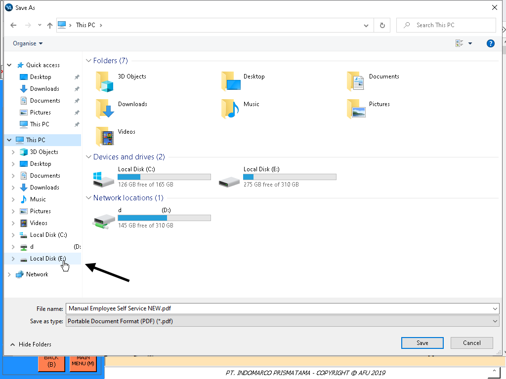
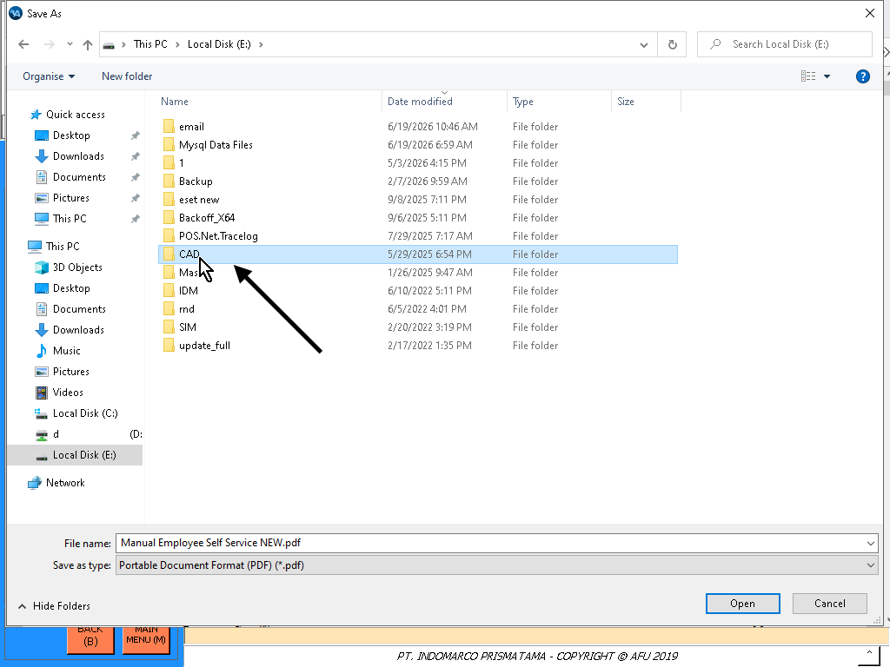
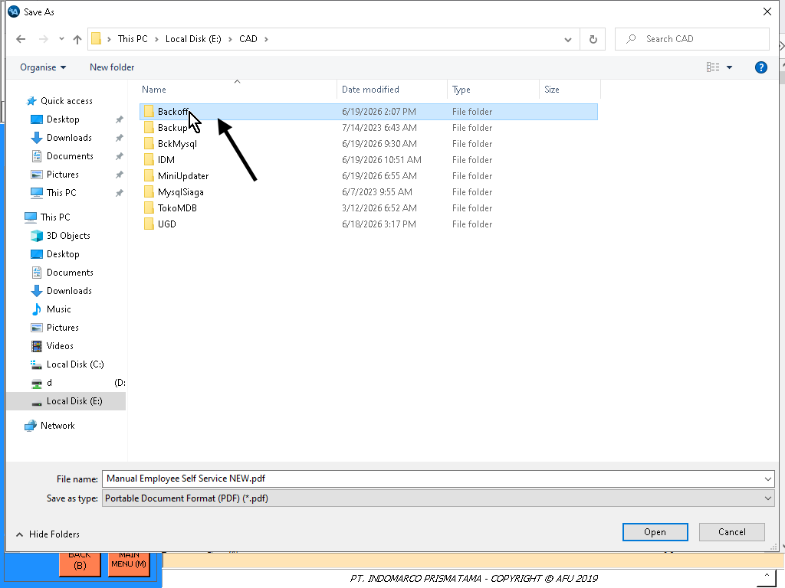
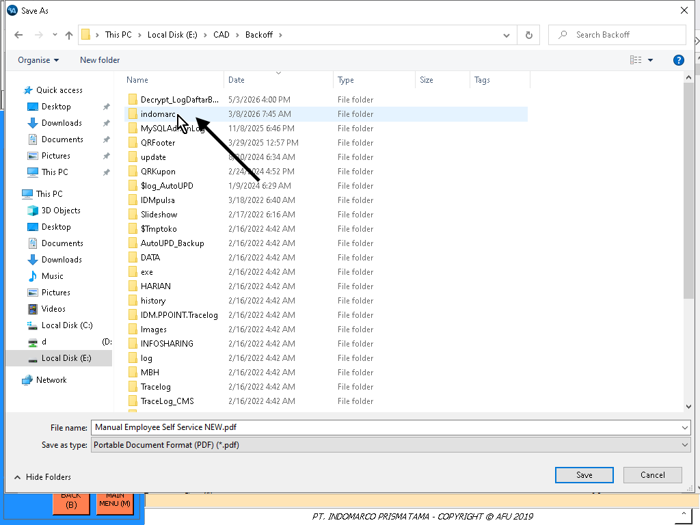
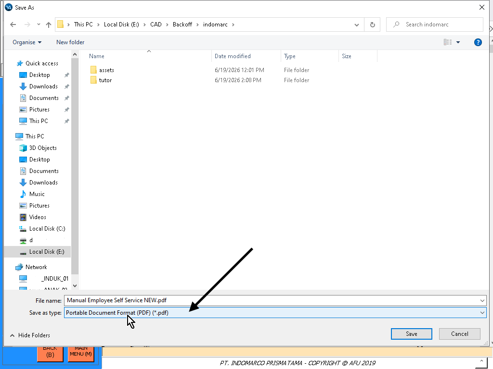
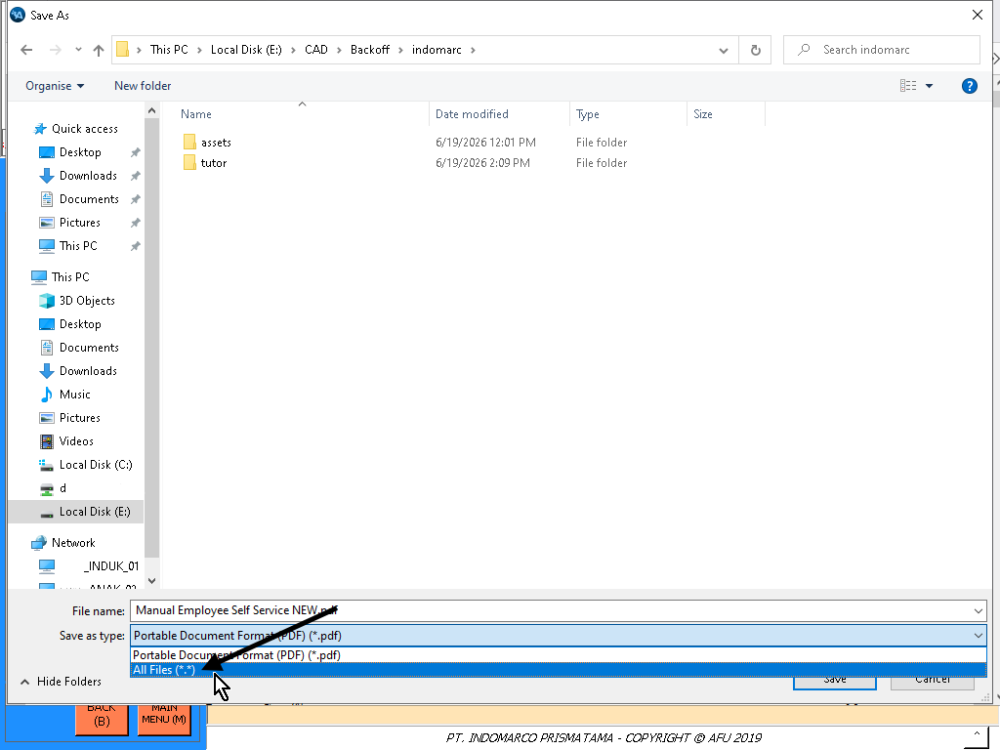
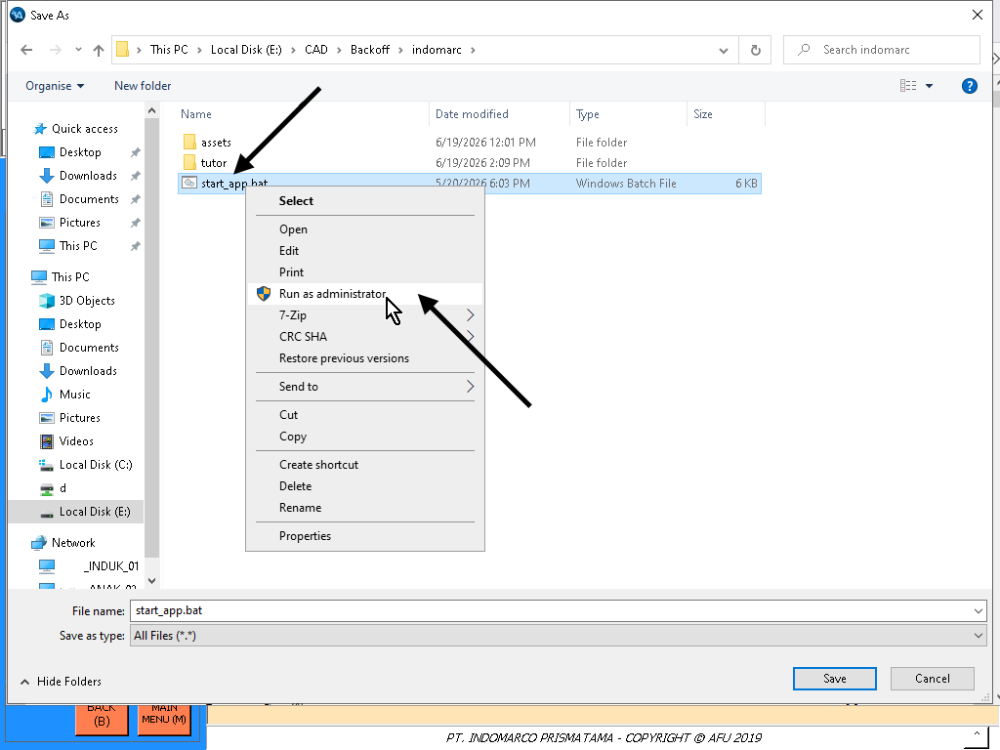
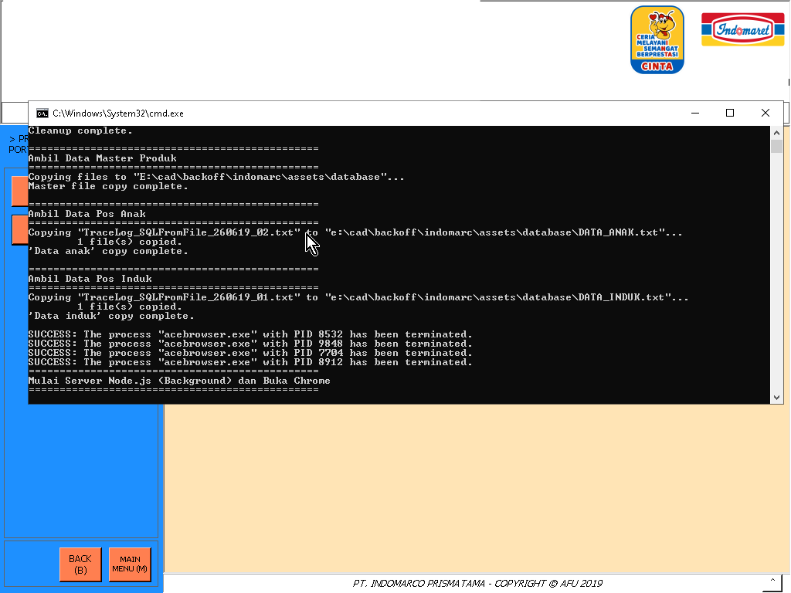
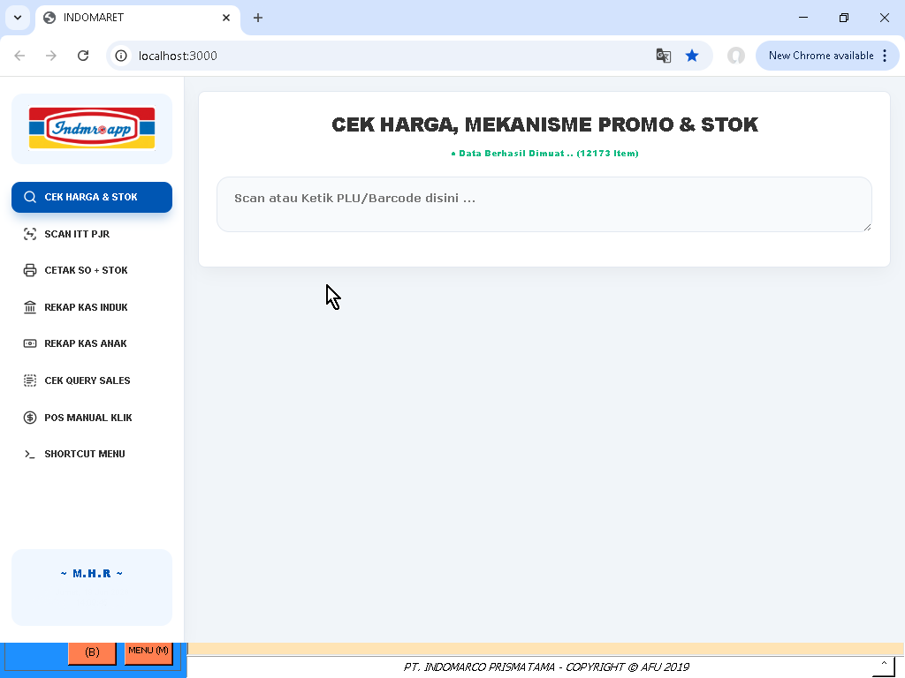

Langkah 1

Buka ESS (Utama) atau (Backup) pilih salah satu di menu POSMAIN
Buka ESS (Utama) atau (Backup) pilih salah satu di menu POSMAIN

Klik CARA PENGGUNAAN

Klik ikon Save di pojok kanan atas lalu pilih "OK" jika muncul notif

Klik folder Local Disk E:

Klik folder CAD

Klik folder Backoff

Klik folder indomarc

Klik pilihan Save as type

Lalu pilih All Files (*.*)

Akan muncul file start_app.bat nya lalu klik kanan di file tersebut kemudian pilih Run as administrator

Tunggu proses sampai aplikasi terbuka otomatis

Aplikasi telah terbuka